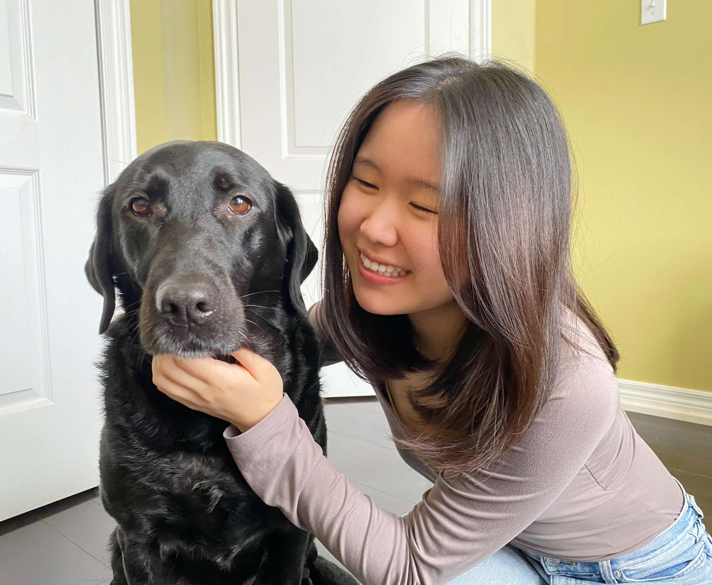

<div class="textcontainer">
<h1 class="bounce">About Me</h1>
<style>
.bounce {
font-size: 3em;
font-weight: bold;
color: #ff66b2;
text-align: center;
font-family: 'Comic Sans MS', cursive, sans-serif;
animation: bounce 1.5s infinite;
}
@keyframes bounce {
0%, 100% { transform: translateY(0); }
50% { transform: translateY(-10px); }
}
</style>
<p class="margin"> </p>
<div class="center-row">

<br></br>
<h3 id="typewriter"></h3>
<script>
const text = "Welcome to My Website!";
let index = 0;
function typeWriter() {
if (index < text.length) {
document.getElementById("typewriter").innerHTML += text.charAt(index);
index++;
setTimeout(typeWriter, 100); // Adjust typing speed here
} else {
document.getElementById("typewriter").style.borderRight = "none"; // Remove cursor after typing
}
}
typeWriter();
</script>
Hi! I'm Jessica, a junior in Kirkland House. I love all things climate tech, energy, and biotextiles. I have a huge sweet tooth and love baking; I'm also a water sports fan--paddle boarding, water skiing, or kayaking!! I'm from Toronto/Tokyo and I love going on walks with my dog, Luna. I don't have much experience in coding or building so please bear with me...
</p>
</div>
<br></br>
I'm so excited to learn more about how I can build functional items as a creative outlet. Join me on this journey as someone with little background in digital fabrication to (hopefully) someone who is comfortable with designing and creating!
<br></br>
</div>